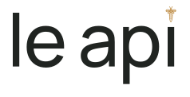

Исходный тёмный

#0B2119
le api / ТЁМНАЯ ПАЛИТРА / МЕНЬШАЯ ПЧЕЛА
Пчела уменьшена на 28%. Все 15 исходных контуров сохранены; толщина линии компенсирована для нового размера. Буквы и интервалы остаются прежними.

Пчела выровнена по оси i, просвет до буквы сохранён. Она занимает меньше места над словом и спокойнее сочетается со шрифтом.
01 — понравившийся самый тёмный #0B2119. Далее — четыре небольших шага светлее в той же гамме. Размер логотипа, светлые буквы и тёплый акцент одинаковы во всех карточках.
Для основного направления я бы сравнил прежде всего 01 и 03: первый — наиболее строгий, третий чуть лучше раскрывает зелёный. Палитра ещё не утверждена.
Контуры векторные. В маленьком размере полосы и линии крыльев могут сливаться: их наличие в мастере не означает одинаковую различимость на любом экране.
Откройте эту страницу на телефоне и компьютерах. Для сравнения временно отключите Night Shift и цветовые фильтры, если они включены. Новые цвет и логотип пока не перенесены в приложение.